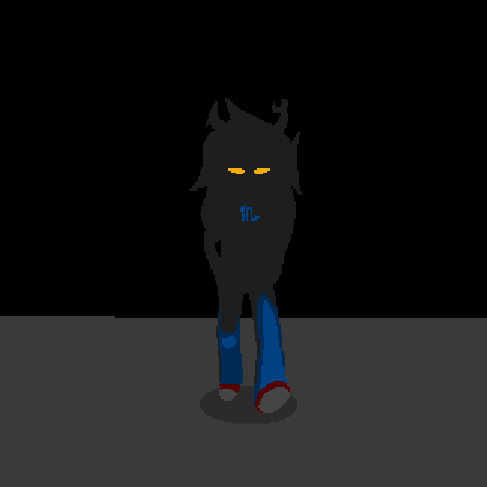

Home
/
Flashes & Games
/
[S][A6A6I4] ====>
(
Previous
,
Next
)
Flashes & Games
Side 1 (Acts 1-5)
Side 2 (Acts 6-7)
Act 6 Act 1 - Through Broken Glass
Act 6 Intermission 1 - corpse party
Act 6 Act 2 - Your shit is wrecked.
Act 6 Intermission 2 - penis ouija
Act 6 Act 3 - Nobles
Act 6 Intermission 3 - Ballet of the Dancestors
Act 6 Act 4 - Void
Act 6 Intermission 4 - Dead
Act 6 Act 5 - Of Gods and Tricksters
Act 6 Intermission 5 -
I'M PUTTING YOU ON SPEAKER CRAB.
Act 6 Act 6 Act 1 - HOMOSUCK
Act 6 Act 6 Intermission 1 - Stardust
Act 6 Act 6 Intermission 2 - theres problems
Act 6 Act 6 Intermission 3 - GAME OVER
Act 6 Act 6 Intermission 4 -
F1X TH1S
[S][A6A6I4] ====>
[S][A6A6I4] ====>
[S][A6A6I4] ====>
[S][A6A6I4] ====>
Act 6 Act 6 Act 5 - MASTERPIECE
Act 6 Act 6 Intermission 5 -
She's 8ack
Act 6 Act 6 Act 6 -
Collide.
Act 7 -
The Rapture
& Post Canon
Outside Canon (Misc. Games)
Hiveswap Friendsim
Pesterquest
[S][A6A6I4] ====>

Released 19 January 2015.
Play on
homestuck.com
(page 7405)
.
Tracks featured in
[S][A6A6I4] ====>
:
not a creature was stirring
by
Alexander Rosetti
{kind=link}